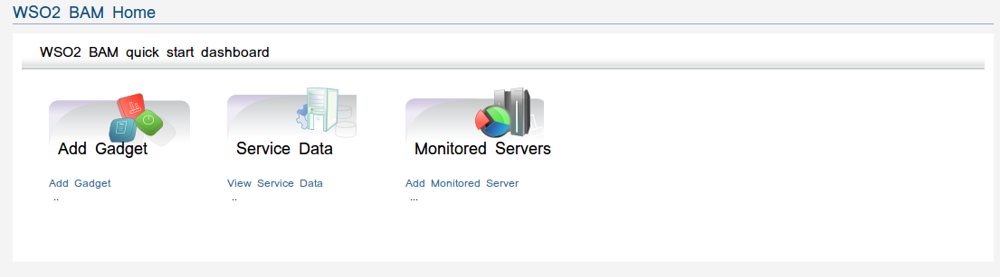

The WSO2 Data Analytics Server Home page provides a interface to access the monitoring services of the SOA platform of your organization.The WSO2 Data Analytics Server (WSO2 DAS) serves the needs of both business and IT domain experts to monitor and understand business activities within an SOA deployment. While specifically designed to monitor SOA deployments, it can be extended to cater to other general monitoring requirements as well.
Figure1: WSO2 DAS Home Page
The Dashboard is an Executive Information System, which gives users a Bird's Eye view of their SOA by way of a set of Gadgets. Users can use the default set of Gadgets shipped with a WSO2 product as well as adding their own.
Service data and Mediation data dashboards display key operational data that are lightly summarized and updated as and when the latest data is available. For example, latest counts and time measures for both service and mediation data are available as operational dashboards.
Servers adding and monitoring tasks done by using this component.Server addition is driven by three types of data collection methods.